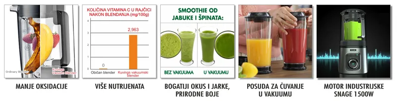

Inovacija u blendanju - prvi vakuumski blender za najsvježije napitke i maksimalno očuvanje nutrijenata!
Kuvings vakuumski blender prije procesa blendanja izvuče sav zrak iz posude kako se on ne bi miješao s namirnicama, što znatno usporava proces oksidacije i maksimalno čuva njihovu nutritivnu vrijednost!
Od sada uživajte u više nutrijenata, okusa, kremastijoj strukturi i svježini smoothie-ja bez najčešćih problema kod blendanja - oksidacije, razdvajanja i buke! Kuvings vakuumski blender prije procesa blendanja otkloni preko 90% zraka iz posude kako bi dobili najkremastiju strukturu smoothie-ja, juhe, pirea ili umaka uz minimalni gubitak nutrijenata.
Zbog blendanja u vakuumu, namirnice se automatski same povlače dolje prema nožu te nije potrebno koristiti štap.
Štap koristite kada blendate bez vakuuma za izradu namaza, maslaca od kikirikija, mljevenje i sl.

Blendanje u vakuumu
u optimalnim uvjetima u vakuumu pod tlakom od 250hPa namirnice tijekom blendanja na dolaze u dodir sa zrakom kako bi se maksimalno očuvala njihova nutritivna vrijednost te zadržale boje i okus.
Automatsko blendanje
Funkcija automatskog blendanja prepoznaje konzistenciju i količinu namirnica u posudi i prema tome odredi brzinu i dužinu blendanja te se automatski zaustavi kada je smjesa u posudi optimalno izblendana.
Industrijsko snažni motor
Motor snage 1500W (3,5ks) te maksimalne brzine 32000 okretaja u minuti s lakoćom usitni led, zamrznuto voće ili zeleno lisnato povrće do fine, kremaste strukture.
Smanjena buka
Pokrov za vakuumiranje znatno smanjuje buku motora tijekom blendanja.
Sigurnosni senzor
Senzor za sigurnost će spriječiti pokretanje blendera ako pokrov za vakuumiranje nije pravilno sjeo na bazu.
Senzor za zaštitu motora
Senzor za zaštitu motora će zaustaviti rad blendera ako se motor previše zagrije kako ne bi došlo do oštećenja.
BPA free
Posude blendera su BPA free, sigurne za vaše zdravlje, bez štetnih kemikalija.
Posuda za pohranu
Osim posude za blendanje u paketu dolazi i posuda za čuvanje u vakuumu kako bi što duže zadržali nutritivnu vrijednost, svježinu, boju i okus smoothie-ja. Čuvajte smoothie do 7 dana u hladnjaku uz minimalan gubitak nutrijenata!